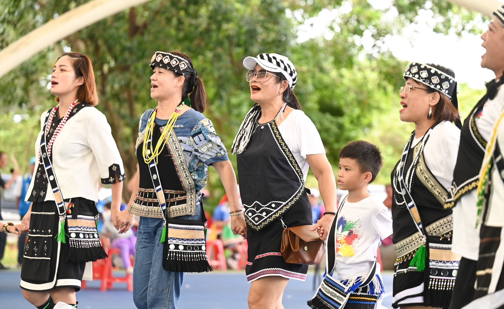
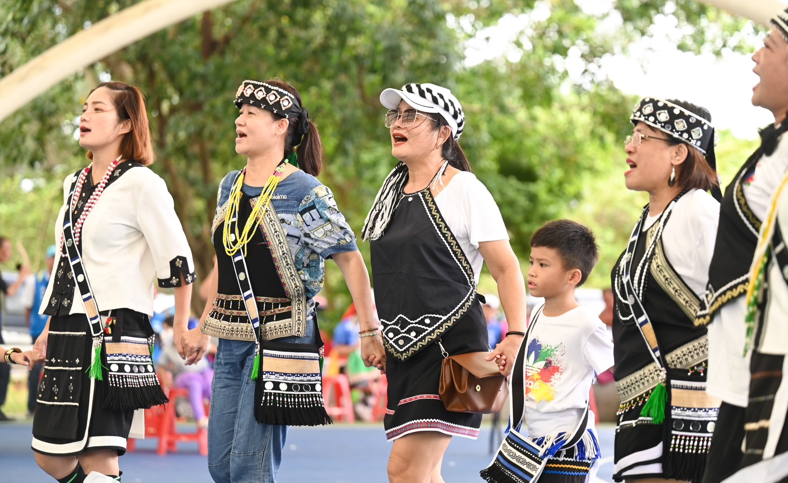

族群介紹
噶瑪蘭族早期居住於宜蘭平原，後遷移至花蓮、台東沿海地區。 擁有香蕉絲編織、古調歌謠以及以海岸生活為核心的文化特色。
噶瑪蘭族為臺灣平埔族之一，以語言、儀式與織布文化著名， 雖人口較少，但文化保存非常珍貴。
地理位置
噶瑪蘭族主要分布在花蓮縣吉安鄉與宜蘭平原一帶。
景點特色
| 地點 | 地區 | 特色說明 |
|---|---|---|
| 吉安鄉噶瑪蘭部落 | 花蓮縣 | 保留語言、古調、祭儀與編織文化的重要基地。 |
| 噶瑪蘭遺址 | 宜蘭縣 | 早期居住區，展現族群遷移與文化痕跡。 |
飲食文化
| 食物 | 主要材料 | 文化說明 |
|---|---|---|
| 香蕉絲料理 | 野香蕉、山菜 | 與編織文化共通的素材，象徵海岸生活智慧。 |
| 海鮮料理 | 魚類、貝類 | 族人靠海生活，飲食以海洋資源為主。 |
照片與影片介紹
部落照片
 

以上為噶瑪蘭族的衣著特色。
影片介紹
以上為噶瑪蘭族的文化介紹影片。